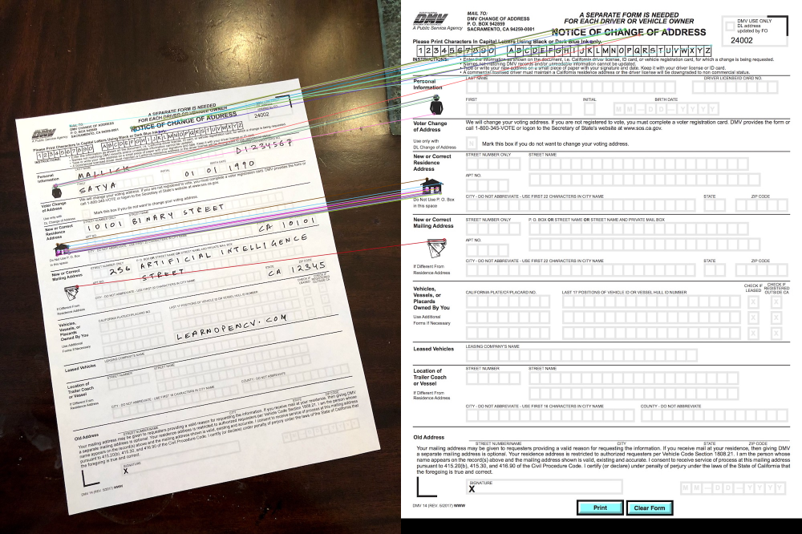
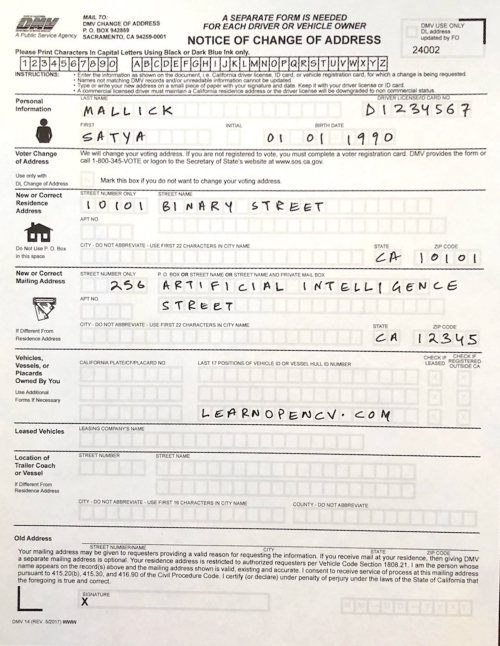

10-特征匹配恢复目标¶
当我们有以下表格的照片时，我们希望可以让机器自动识别里边的内容，但是由于拍照角度光照等因素，表格纸张往往会发生一些切向的形变，这就需要我们对之进行特征匹配，找到对应的转换矩阵后，将其恢复成标准姿态。

- 代码实现：
"""
Oriented FAST and Rotated BRIEF
"""
import numpy as np
import cv2
MAX_MATCHES = 500
GOOD_MATCH_PERCENT = 0.15
def main():
fn1 = "./data/scanned-form.jpg" # trainImage
fn2 = "./data/form.jpg" # queryImage
# 加载并将图片转为灰度模式
img1 = cv2.imread(fn1, cv2.IMREAD_COLOR)
img2 = cv2.imread(fn2, cv2.IMREAD_COLOR)
img1Gray = cv2.cvtColor(img1, cv2.COLOR_BGR2GRAY)
img2Gray = cv2.cvtColor(img2, cv2.COLOR_BGR2GRAY)
# 初始化检测器
# 设置检测最大特征数量为400
detector = cv2.ORB_create(MAX_MATCHES)
# 开始检测ORB特征，计算描述符
keypoints1, descriptors1 = detector.detectAndCompute(img1Gray, None)
keypoints2, descriptors2 = detector.detectAndCompute(img2Gray, None)
print("img1: {} features, img2: {} features".format(len(keypoints1), len(keypoints2)))
# 匹配特征
# mathcher = cv2.DescriptorMatcher_create(cv2.DESCRIPTOR_MATCHER_BRUTEFORCE_HAMMING)
mathcher = cv2.BFMatcher_create(cv2.NORM_HAMMING, crossCheck=True)
matches = mathcher.match(descriptors1, descriptors2, None)
# 根据评分排序, 由小到大
matches.sort(key=lambda x: x.distance, reverse=False)
# 移除较差的匹配结果, 只保留前15%的结果
good_matches_num = int(len(matches) * GOOD_MATCH_PERCENT)
good_matches_num = max(good_matches_num, 10) # 至少保证有10个
matches = matches[:good_matches_num]
# 绘制这些匹配点
img_matches = cv2.drawMatches(img1, keypoints1, img2, keypoints2, matches, None, flags=cv2.DRAW_MATCHES_FLAGS_NOT_DRAW_SINGLE_POINTS)
# cv2.imwrite("matchs.jpg", img_matches)
cv2.imshow("matchs", img_matches)
# 提取匹配点的位置, 高n,宽2
points1 = np.zeros((len(matches), 2), dtype=np.float32)
points2 = np.zeros((len(matches), 2), dtype=np.float32)
for i, match in enumerate(matches):
# 保存查询描述符位置
points1[i, :] = keypoints1[match.queryIdx].pt
# 保存训练描述符位置
points2[i, :] = keypoints2[match.trainIdx].pt
# 查找两组点之间的单应性矩阵
homograph, mask = cv2.findHomography(points1, points2, cv2.RANSAC)
# 应用单应性矩阵
height, width, channels = img2.shape
# 对图像执行透视变换
# 将大图1经过透视变换，转成小图2的大小
img1_new = cv2.warpPerspective(img1, homograph, (width, height))
cv2.imshow("img1_new", img1_new)
print("Estimated homography: \n", homograph)
while cv2.waitKey(100) != 27:
continue
cv2.destroyAllWindows()
if __name__ == '__main__':
main()
- 输出结果

执行透视变换后得到：

这样我们就可以方便的识别表格内容了。